| 日付 | 2018年7月16日（月） |
|---|---|
| メンバー | 家族（妻、長女・7歳、長男・5歳） |
| アクセス | 車 |
昨日は山から帰るのが遅くなってしまったが、
本日も晴予報のため出かけることにする。本日は川遊び。
川は山や海水浴場と違って体系的な情報がないため、
良いスポットを探すのは結構大変だ。
これまで丹沢の水無川や中川川に行ったことがあるが、
いずれも水量が少なく少々物足りなかった。
今回は川遊びで有名な道志川に行ってみることにする。
今回は両国橋キャンプ場を利用することにする。
駐車料金や入場料をとられるが、比較的良心的な値段だと思う。
川の水は驚くほどきれいだ。

川遊びの準備をしているだけで汗だくになる。
しかし冷たい水に足をつけると、それだけでみるみる汗が引いていく。
できるだけ水温が高い場所が良いので、比較的下流の場所を選んだのだが、
それでも水はものすごく冷たい。
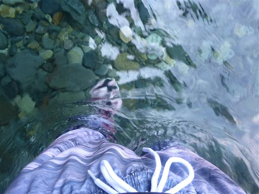
子供たちは水に入らず、おたまじゃくし捕りに夢中になっている。
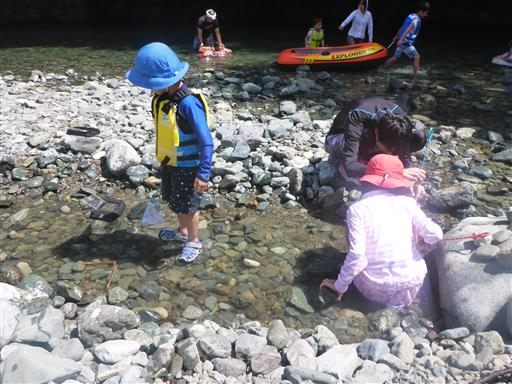
捕まえたおたまじゃくし。
海のハゼと違ってトロいので、いくらでも簡単に捕まえられる。素手でも楽勝だ。
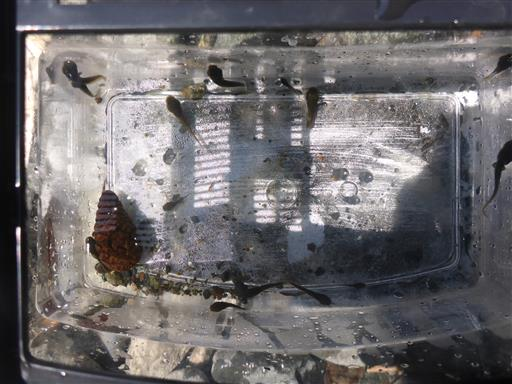
一通り生物で遊んだら、水に入って泳いでみることにする。
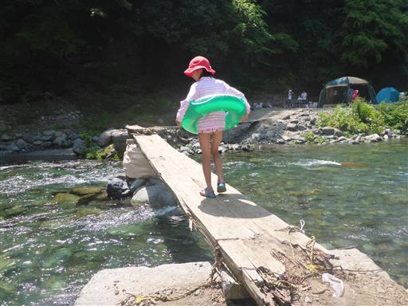
この辺りはちょっと深くなっている。泳ぐには良さそうなスポットだ。
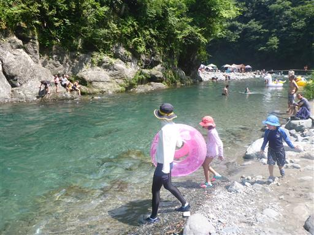
入水。冷たい、が慣れると案外大丈夫。
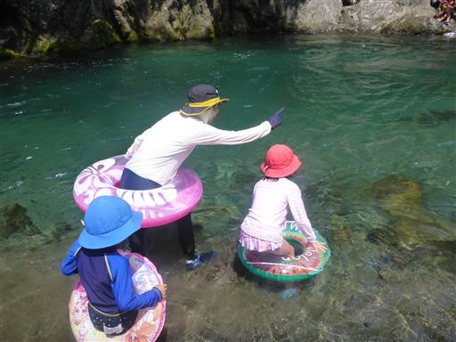
水深は2～3mくらい。シュノーケルセットを身に着けて水中を覗いてみると、
アユなどの魚がたくさん見られる。
20～30cmくらいの大きな魚も泳いでいる。
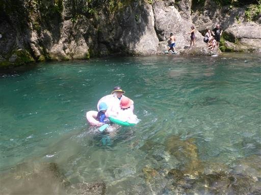
息子は気持ちよかったのか、岸に上がった後もすぐに一人で遊び出す。
危ないのですぐ回収。
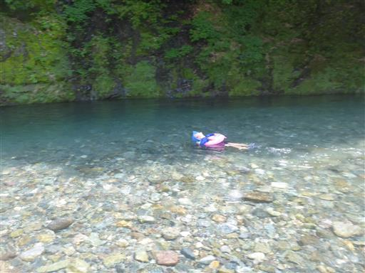
飛び込み用のターザンロープ。高度感はないので、あまり怖くはない。
それでも飛び込みスポットがあるのはありがたい。
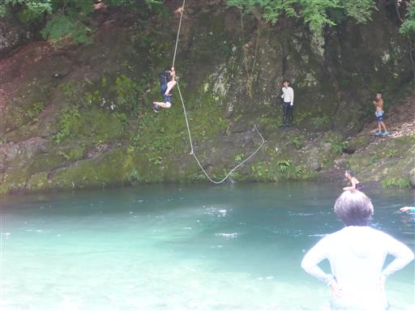
浅瀬は急流になっている。
浮輪に乗って急流下りをしてみたが、ちょっと水量が足りない。
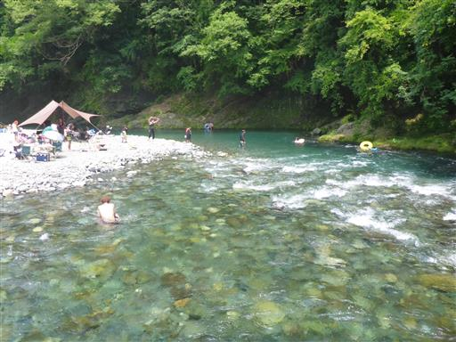
うだるような暑さのはずだが、
川で冷やされた体には心地よい。
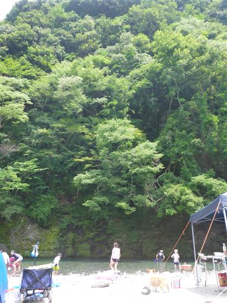
体が冷えたので、またしばらくはおたまじゃくし捕り。
ときどき1cmくらいの小さな魚も見つかる。
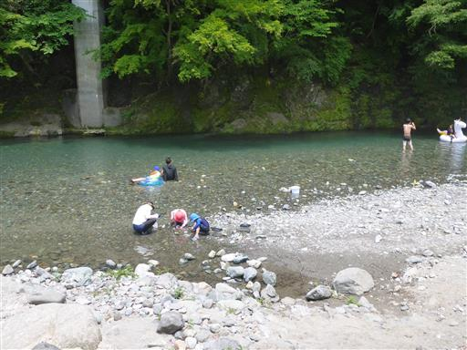
昼になり日影がだいぶ少なくなってきた。
水中はだいぶ濁ってきたが、それでもきれいな色をしている。
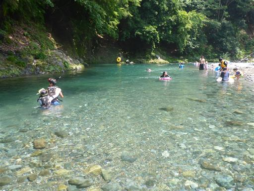
最後にもうひと泳ぎして撤収。
このスポットは大きな岩などが無く、地形の変化は少々乏しいが、
水量・水質ともに申し分なく、また来たいと思える良い場所だった。
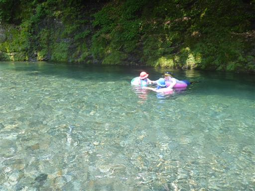